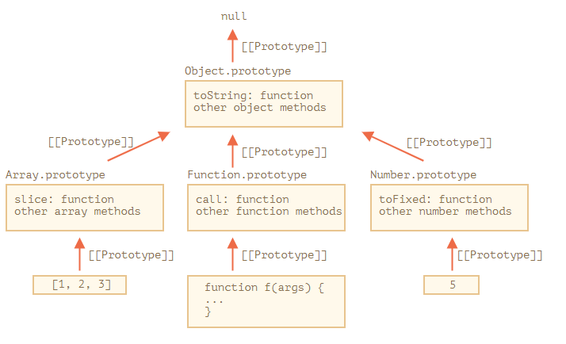

Thuộc tính "prototype" được sử dụng rỗng rãi trong Javascript. Mọi constructor function có sẵn của JS đều sử dụng nó.
Đến đây có thể mọi người đã bị loạn não nên mình sẽ nhắc lại.
[[Prototype]] là một thuộc tính ẩn trong object(function) đại diện trong prototype thực tế.__proto__ là getter/setter truy cập đến [[Prototype]]"prototype" tồn tại trong constructor function nó là một thuộc tính bình thường, không phải là [[Prototype]]. Nó giúp chúng ta kế thừa khi tạo object từ constructor function.Cùng nói về một object rỗng
let obj = {}
console.log(obj.toString()) // "[object Object]"
Khoan đã! Chúng ta không hề thấy phương thức toString được khai báo trong obj. obj là object rỗng cơ mà.
Đầu tiên là obj={} thì tương tự như obj = new Object(), mà Object là một constructor function được xây dựng sẵn trong JS. Object có thuộc tính prototype tham chiếu đến một object khổng lồ với nhiều phương thức và toString cũng nằm trong đó.
Khi new Object() được gọi (hoặc literal object {...} được tạo), [[Prototype]] của nó sẽ được set là Object.prototype
Vì thế khi obj.toString() được gọi thì thực chất là lấy toString() từ Object.prototype
Chúng ta có thể kiểm tra
let obj = {}
alert(obj.__proto__ === Object.prototype) // true
alert(obj.toString === obj.__proto__.toString) //true
alert(obj.toString === Object.prototype.toString) //true
Có một lưu ý là không còn một [[Prototype]] nào trong chuỗi Object.prototype nữa
alert(Object.prototype.__proto__) // null
Các prototype được dựng sẵn khác như là Array, Date, Function và số khác cũng giữ trong mình các phương thức trong prototype.
Khi chúng ta tạo một array [1, 2, 3], mặc định new Array() sẽ được sử dụng. Vì thế Array.prototype sẽ trở thành prototype của nó và cung cấp các phương thức cho nó. Điều này vô cùng tiện lợi.
Như mô tả thì tất cả các prototype được xây dựng sẵn đều có Object.prototype trên đỉnh. Đó là lý do tại sao một số người nói rắng mọi thứ đều kế thừa từ object.
Đây là một bức tranh tổng thể (Ví dụ cho 3 prototype)

Cùng kiểm tra bằng tay
let arr = [1, 2, 3]
// it inherits from Array.prototype?
alert(arr.__proto__ === Array.prototype) // true
// then from Object.prototype?
alert(arr.__proto__.__proto__ === Object.prototype) // true
// and null on the top.
alert(arr.__proto__.__proto__.__proto__) // null
Một số phương thức trong prototype có thể bị trùng nhau, ví dụ Array.prototype có toString(), nhưng Object.prototype cũng có toString. Trong trường hợp này thì nó sẽ chọn cái gần hơn.
let arr = [1, 2, 3]
console.log(arr.toString()) // Kết quả của Array.prototype.toString
Phần phức tạp nhất lại xảy ra với String, number, boolean. Như chúng ta biết thì chúng không phải là các object. Nhưng nếu chúng ta có thể truy cập đến các thuộc tính của chúng theo những cách dưới đây
let a = 1
a.toString()
;(2).toString()
Number(2).toString() // tạo bằng object wrapper
Những object này được tạo ẩn và JS engine tối ưu chúng, vì thế ta vẫn có String.prototype, Number.prototype và Boolean.prototype.
Có thể nói string, number, boolean là kiểu nguyên thủy, không phải object và không bị tham chiếu. Còn về bản chất thì chúng cũng là object.
Lưu ý: null và undefined không có các object wrapper, chúng là những giá trị đặc biệt vì thế không có thuộc tính hay prototype.
Chúng ta có thể thay đổi prototype, nếu thêm phương thức show vào String.prototype thì tất cả các string đều có thể được dùng phương thức này.
String.prototype.show = function () {
alert(this)
}
'BOOM!'.show() // BOOM!
Nhưng đây thường là một ý tưởng tồi tệ. Bởi vì các prototype như thế này là toàn cục (global), vậy nên nó dễ bị đè lên nhau. Nếu có 2 thư viện thêm phương thức String.prototype.show, thì sẽ có một phương thức bị đè lên và dẫn đến sai lệch.
Trong lập trình hiện đại, chỉ có một trường hợp duy nhất mà chúng ta sửa đổi các prototype sơ khai là polyfilling
Polyfilling thực ra chỉ là một cách thêm các phương thức mà JS engine hiện tại không hỗ trợ.
Ví dụ object obj không có phương thức join, ta có thể mượn nó từ Array.prototype.join. Sở dĩ join cũng hoạt động được trong object vì thuật toán bên trong phương thức join chỉ quan tâm đến các index đúng và thuộc tính length
let obj = {
0: 'Hello',
1: 'world!',
length: 2
}
obj.join = Array.prototype.join
alert(obj.join(',')) // Hello,world!
Một cách tiếp cận khác là kế thừa bằng cách set obj.__proto__ là Array.prototype, vì thế tất cả phương thức của Array tự động có sẵn ở obj.
Có một điều lưu ý là chúng ta chỉ có thể kế thừa một object tại một thời điểm, trong trường hợp chúng ta kế thừa Array.prototype thì có thể bạn nghĩ chúng ta sẽ mất Object.prototype nhưng may thay thì Array.prototype kế thừa Object.prototype nên chúng ta không bị mất Object.prototype.
Mượn thuộc tính thì khá linh hoạt, nó cho phép chúng ta thêm bớt các tính năng từ các object khác nhau nếu cần thiết.